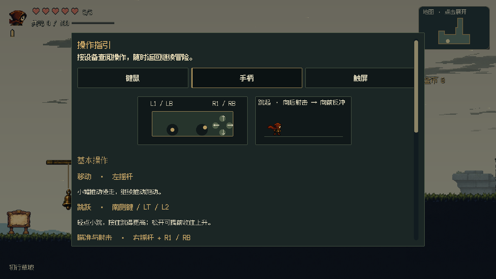
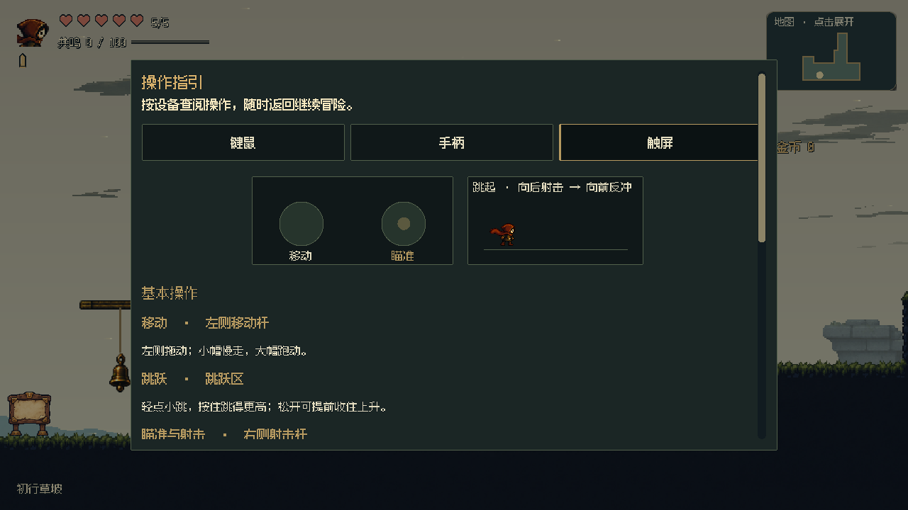
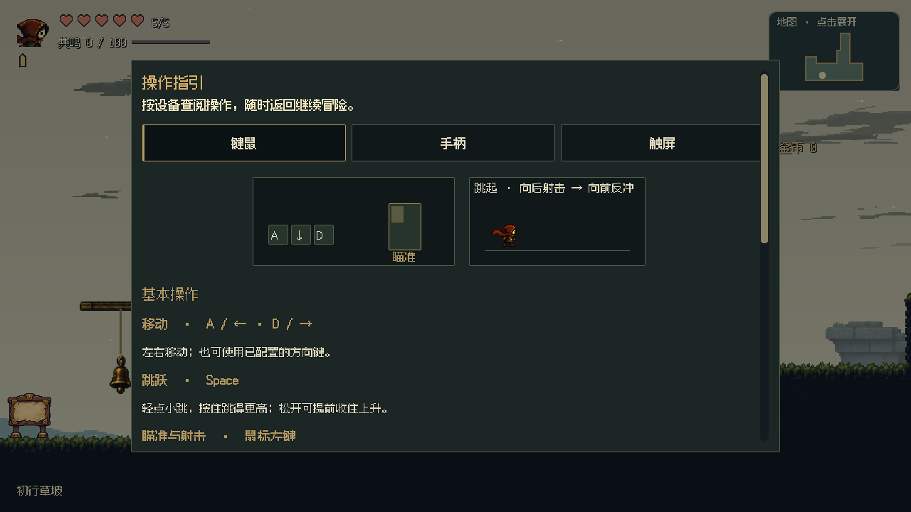

开场按移动、近枪拾取、射铃、首阶跳跃分步提示。当前先完成P03；P21—P24不新增提示。三端按实际输入切换，画面使用正式角色与关卡。
下载开场短片（约8秒／1MB） · 直接试玩P03
视频使用明确的起始位置与模拟设备切换，拾枪、射铃和跳跃经过真实控制器；不冒充自然全流程或实体手柄测试。
下载操作页短片（约4秒／0.2MB）
暂停菜单→操作指引。默认当前设备，也可手动查阅三端；返回菜单保持暂停，继续才恢复游戏。按键读取实际映射，能力与技能随当前进度展示。


